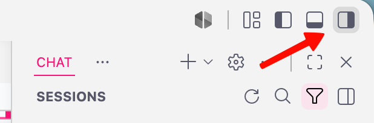
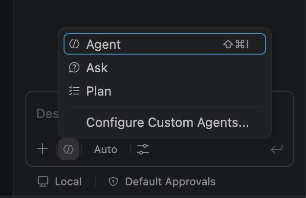

Complete this before the workshop. You will set up a GitHub account, turn on GitHub Copilot Free, and confirm it works inside VS Code. On the day, we build on this foundation to call the Tenable One Hexa MCP directly from your editor.
4
Parts
~20
Minutes
$0
Cost, no card
Mac / Win
Both supported
Why this matters. The session moves fast. If everyone arrives with a working GitHub account, Copilot enabled, and VS Code installed, we spend the full hour on Hexa MCP, not on setup. Please finish all four parts and run the quick test in Part 4 before you arrive.
1
Create a GitHub account
Skip this part if you already have a personal GitHub account you can sign in to.
If you have no paid or organization-assigned Copilot, you are on Copilot Free by default. There is nothing to buy.
If a page asks for payment, back out. That is the Pro trial, which you do not need.
Note. Use a personal GitHub account so everyone is on equal footing. If your company organization already assigns you a Copilot seat, that seat takes over instead of Free, which works fine too.
3
Install VS Code
VS Code runs on both macOS and Windows, and Copilot support is built in.
Run the installer, then open VS Code. No separate Copilot extension download is required.
4
Sign in and test Copilot in VS Code
This confirms your account, Copilot, and editor all work together. Please run it before the session.
Click the account icon in the bottom-left of VS Code (or the Copilot icon in the top title bar).
Choose Sign in to use Copilot or Use Copilot Free, then sign in with your GitHub account.
Authorize VS Code in the browser prompt when it appears.
Create a new file, for example test.py or test.js. Type a comment like # function to add two numbers and press Enter. Copilot should suggest code in grey ghost text. Press Tab to accept.
Open Copilot Chat from the chat icon in the top bar, ask "explain this file", and confirm you get a response. If you don't see the chat panel, click the Toggle Secondary Side Bar button (top-right corner of VS Code) to reveal it.

In Copilot Chat, open the mode dropdown at the bottom of the chat box and confirm you can see an Agent option alongside Ask and Edit. If you only see Ask, update VS Code to the latest version. You do not need to use Agent mode yet, just confirm it is there.

If completions and chat both work, your prework is done.
You are ready when
You can sign in to a personal GitHub account.
GitHub Copilot Free is active on that account.
VS Code is installed and opens on your machine.
Copilot suggests code completions in a test file.
Copilot Chat responds to a question.
Agent mode is available in your Copilot Chat.
Done
Confirm your completion
Fill in this quick form so we know you're ready for the session.
 Guardian Summit · Prework
Guardian Summit · Prework